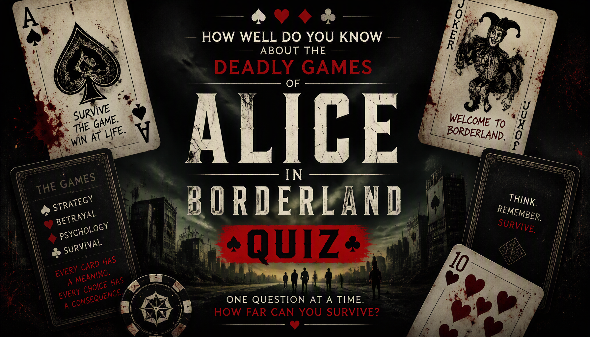

Think you can survive the Borderland games? Test your knowledge of the deadly challenges, game rules, playing cards and survival mechanics from Alice in Borderland Seasons 1, 2 and 3.


About the Alice in Borderland Games Quiz
The Alice in Borderland Games Quiz is a 40-question trivia challenge for fans of the Japanese survival thriller series Alice in Borderland. Unlike a general character or story quiz, this challenge focuses specifically on the deadly games played throughout the series.
The questions cover game rules, objectives, playing cards, locations, hazards, scoring systems and special mechanics. You will encounter questions about games from Seasons 1, 2 and 3, including challenges such as Dead or Alive, Tag, Hide and Seek, Osmosis, Checkmate, Beauty Contest, Old Maid, Zombie Hunt, Runaway Train, Kick the Can and Future Sugoroku.
Some questions test basic game objectives, while others focus on specific rules and mechanics that are easier to forget. If you paid close attention to how the games actually worked, this quiz gives you a chance to test your memory of the Borderland's most dangerous challenges.
How the Alice in Borderland Games Quiz Works
The quiz contains 40 questions. Every question has four possible choices, but only one answer is correct. Read each question carefully and select the answer you believe is correct before continuing.
Each correct answer gives you 1 point, while an incorrect answer gives you 0 points. With 40 questions in total, your number of correct answers is converted into a final percentage out of 100%.
Your final result represents your knowledge of the Alice in Borderland games based on your performance. A high score means you successfully remembered many of the rules, objectives, hazards and mechanics used throughout the series.
Quiz Navigation
Starting the quiz
Select START QUIZ on the opening screen to begin. The first question will appear with four possible answers.
Selecting an answer
Read the question and all four choices before making your decision. Select the answer you believe is correct and continue through the quiz.
Next and Back buttons
Use Next to move forward through the questions. The Back button allows you to return to an earlier question and review your selection. Your current question number and progress are displayed as you move through the quiz.
Finishing the quiz
Continue until you have answered all 40 questions. When you reach the end, submit your answers to finish the quiz and view your final percentage and Alice in Borderland Games Knowledge result.
Try Again and Challenge Friends
After viewing your result, select TRY AGAIN to replay the quiz and attempt a higher score. You can also use SHARE MY RESULT or CHALLENGE YOUR FRIENDS to share your result and challenge other fans.
Alice in Borderland Games Quiz FAQ
How many questions are in the quiz?
There are 40 questions in total, and every question has four possible choices.
What is the maximum score?
The maximum result is 100%. Each correct answer contributes 1 point before the score is converted into a percentage.
What topics are covered?
The quiz focuses on the games of Alice in Borderland, including game objectives, rules, playing cards, scoring systems, hazards, locations and special mechanics from Seasons 1, 2 and 3.
Is this quiz about the characters?
The quiz is primarily focused on the games rather than character biographies or general story events. Questions are designed around the rules, objectives and mechanics of the Borderland games.
Which seasons are covered?
The quiz includes games from Seasons 1, 2 and 3 of Alice in Borderland.
What does my score mean?
Your percentage shows how many of the 40 game-related questions you answered correctly. A higher score indicates stronger knowledge of the games featured in the series.
Can I take the quiz again?
Yes. Select TRY AGAIN after completing the quiz to start another attempt and try to improve your score.
Can I challenge my friends?
Yes. Select CHALLENGE YOUR FRIENDS after completing the quiz to share the challenge and see whether your friends can beat your score.
Spoiler Warning
This quiz contains spoilers for Alice in Borderland Seasons 1, 2 and 3. Questions may reveal game rules, outcomes, locations, playing cards, survival mechanics and other important details from the series.
If you have not finished watching the relevant seasons, consider completing them before taking the quiz to avoid having important game details spoiled.